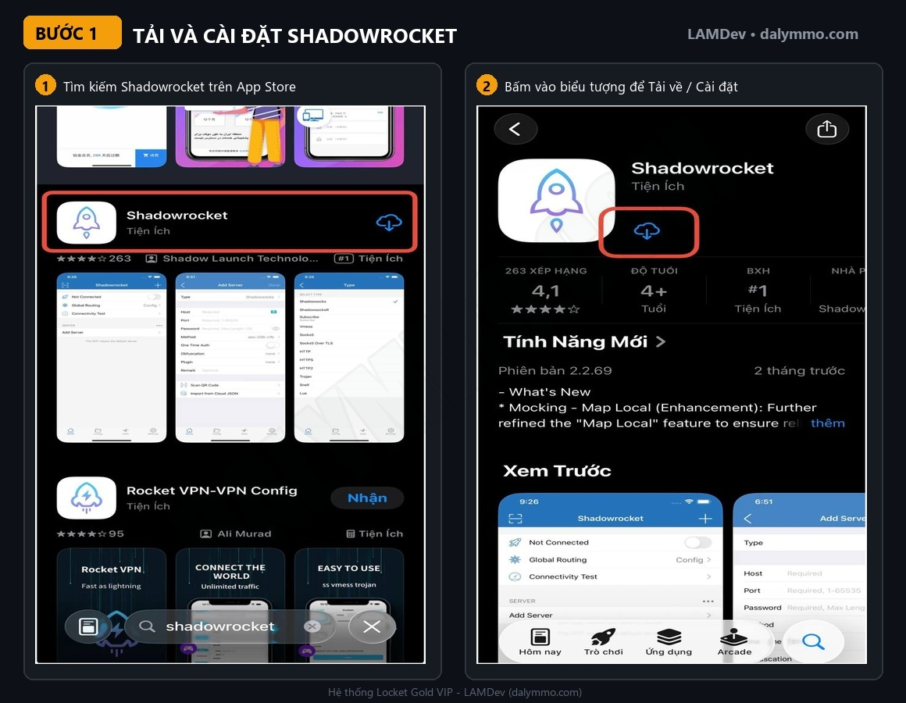
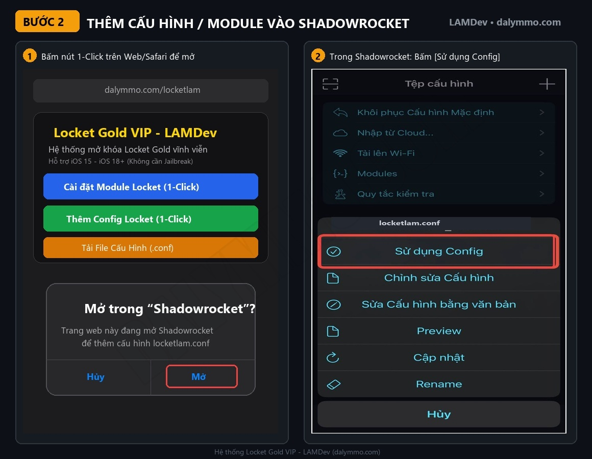
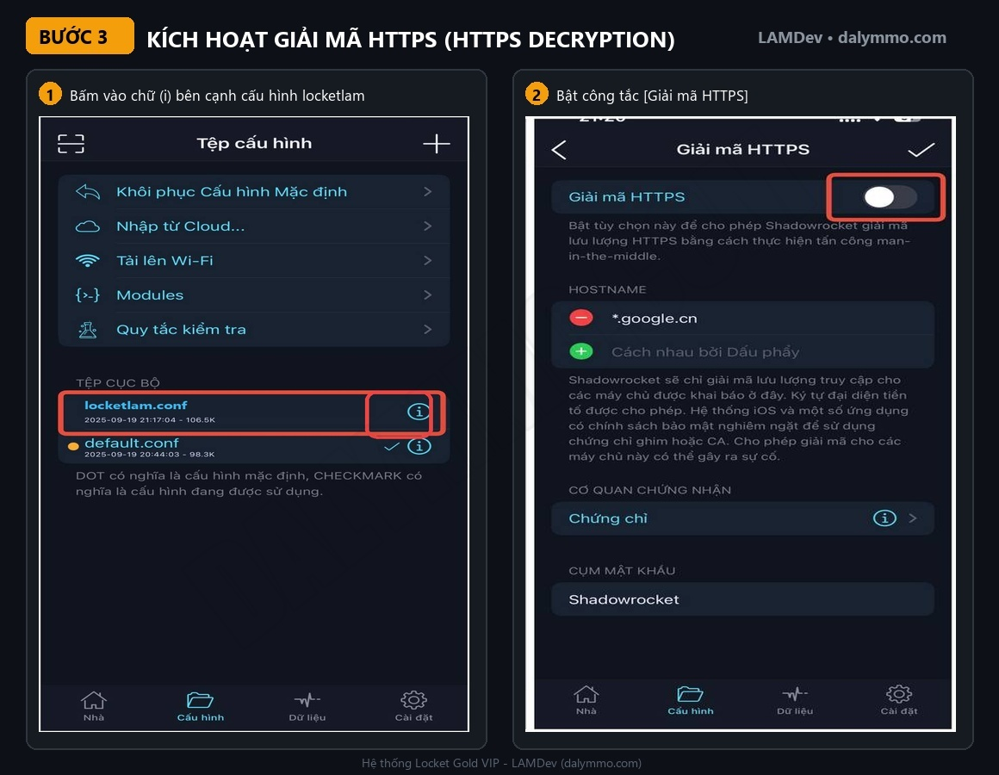
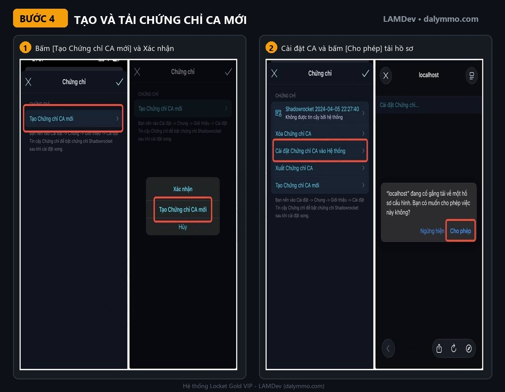
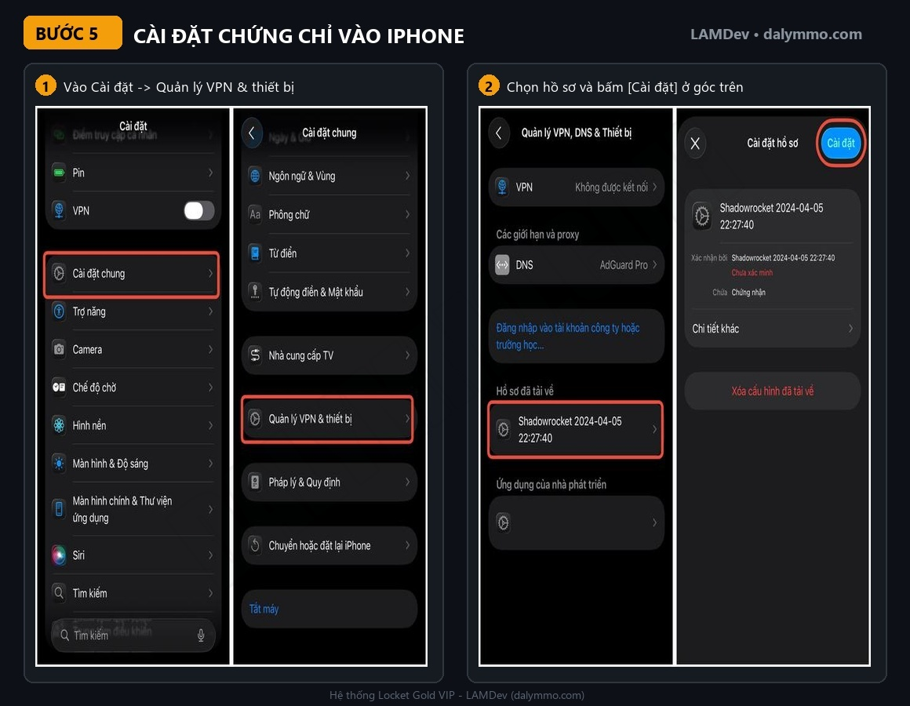
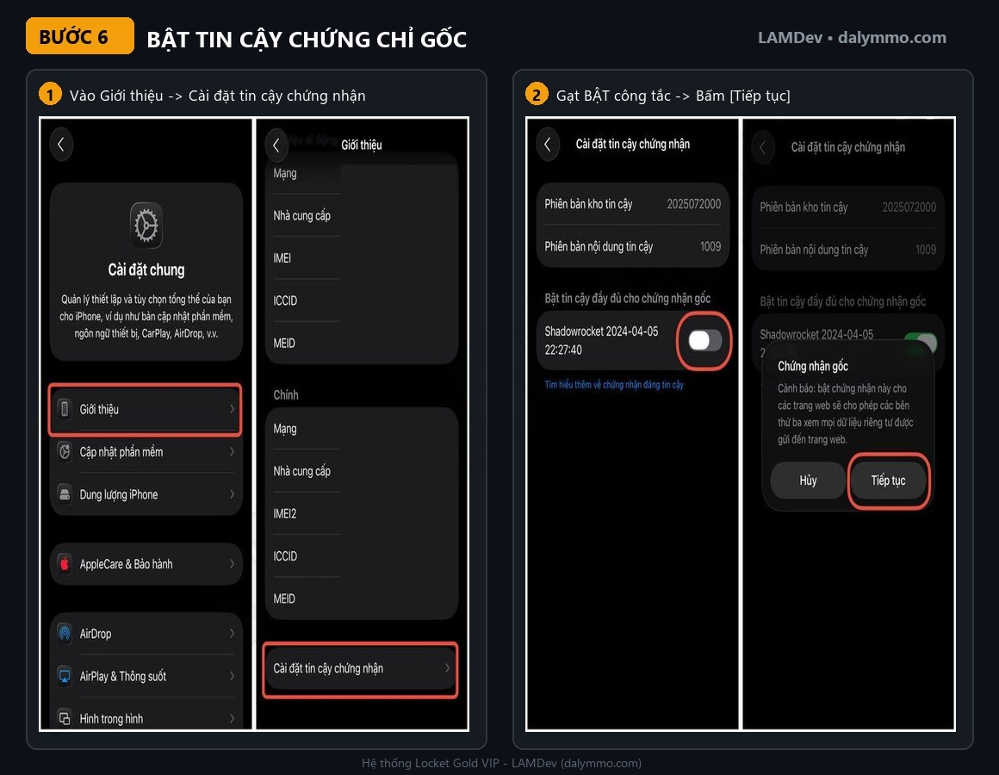
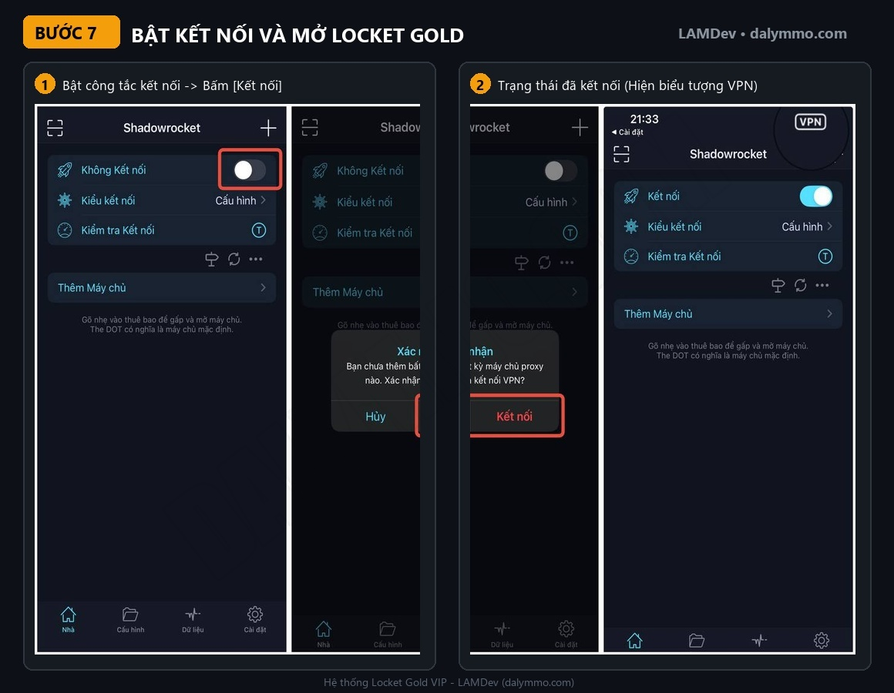

Nâng Locket Gold Bằng Shadowrocket Miễn Phí: Hướng Dẫn 7 Bước Kèm DNS Chống Thu Hồi 💛
Bạn muốn dùng Locket Gold với đầy đủ theme, icon, khung widget và xem được ai đã xem bài đăng của mình, nhưng không muốn trả phí hằng năm? Với Shadowrocket và bộ cấu hình LocketLAM do LAMDev phát triển, bạn có thể mở khóa Locket Gold ngay trên app Locket chính chủ tải từ App Store, chỉ với vài thao tác trên iPhone.
Bộ cấu hình được tinh gọn 100% dành riêng cho Locket, loại bỏ mọi thành phần dư thừa của các ứng dụng khác nên chạy nhẹ và ổn định. Kèm theo đó là DNS chống thu hồi giúp giữ trạng thái Gold lâu dài mà không phải bật VPN liên tục.
💡 Tóm tắt nhanh: Cài Shadowrocket → bấm link 1-click nạp Module/Config → bật Giải mã HTTPS → tạo & tin cậy chứng chỉ CA → bật VPN và mở lại Locket. Muốn tắt VPN vẫn giữ Gold thì cài thêm hồ sơ DNS .mobileconfig.
1. Locket Gold Bằng Shadowrocket Là Gì?
Shadowrocket là ứng dụng proxy/VPN cho iOS có khả năng can thiệp (rewrite) các phản hồi mạng theo quy tắc. Khi Locket kiểm tra gói đăng ký, module locketlam.sgmodule sẽ trả về thông tin gói Locket Gold hợp lệ, nhờ đó app mở khóa toàn bộ tính năng VIP. Để đọc và sửa được nội dung kết nối HTTPS, Shadowrocket cần bật HTTPS Decryption cùng một chứng chỉ CA do chính máy bạn tạo ra.
1.1 Danh sách tính năng được mở khóa
| Nhóm tính năng | Chi tiết mở khóa 💛 |
|---|---|
| Gói VIP | Gói Locket Gold 1 năm, gia hạn tự động đến năm 9999 |
| Hồ sơ & Huy hiệu | Huy hiệu vàng Gold Badge trên trang cá nhân và bài đăng |
| Giao diện & Icon | Chọn mọi App Icon độc quyền và Camera Themes |
| Đăng tải & Camera | Tải ảnh từ Camera Roll không giới hạn, quay video dài hơn |
| Tương tác & Xem | Locket Views: biết ai đã xem bài đăng của bạn |
| Chú thích & Bạn bè | Long Captions không giới hạn ký tự, kết bạn không giới hạn |
| Tiện ích (Widgets) | Toàn bộ Custom Widget Frames cao cấp |
| Chuỗi bạn bè | Streak Recovery: khôi phục chuỗi khi lỡ quên gửi |
| Trải nghiệm | Xóa sạch quảng cáo và pop-up mời mua gói |
⚠️ Lưu ý quan trọng: Đây là giải pháp cộng đồng miễn phí, không phải sản phẩm chính thức của Locket. Hãy dùng cho mục đích cá nhân, và nếu có điều kiện hãy ủng hộ nhà phát triển ứng dụng gốc.
2. Cài Đặt Nhanh 1-Click Cho iPhone
Trên Safari iPhone, bấm trực tiếp vào các liên kết dưới đây để thiết bị tự mở Shadowrocket và nạp cấu hình. Repo gốc nằm tại github.com/leanhminh2104/locketlam (nhánh shadowrocket).
2.1 Bảng link chép thủ công
Nếu bấm 1-click không mở được Shadowrocket, hãy chép link bên dưới và dán vào tab Cấu hình hoặc Module trong ứng dụng:
# Module Locket (.sgmodule)
https://raw.githubusercontent.com/leanhminh2104/locketlam/refs/heads/shadowrocket/locketlam.sgmodule
# Config Locket (.conf)
https://raw.githubusercontent.com/leanhminh2104/locketlam/refs/heads/shadowrocket/locketlam.conf
# Hồ sơ DNS chống thu hồi (.mobileconfig)
https://cdn.jsdelivr.net/gh/leanhminh2104/locketlam@shadowrocket/locketlam.mobileconfig💡 Mẹo: Cũng có trang cài đặt nhanh tổng hợp tại Web Installer, mở bằng Safari trên iPhone là dùng được ngay.
3. Hướng Dẫn Chi Tiết Từ A–Z (7 Bước)
Làm lần lượt 7 bước dưới đây. Bước 6 (tin cậy chứng chỉ) là bước quan trọng nhất, bỏ sót là Locket sẽ không lên Gold.
Bước 1: Tải và cài đặt Shadowrocket
Mở App Store trên iPhone, tìm từ khóa Shadowrocket và tải về. Ứng dụng này là bản trả phí; nếu bạn chưa có thì cần mua hoặc dùng tài khoản đã sở hữu ứng dụng.

Bước 2: Thêm Module hoặc Config vào Shadowrocket
Bấm nút cài nhanh ở Mục 2 bằng Safari. Khi hộp thoại Mở trong "Shadowrocket"? hiện lên, chọn Mở. Cấu hình locketlam.conf sẽ được thêm tự động, chạm vào nó và bấm Sử dụng Config.

Bước 3: Bật Giải mã HTTPS (HTTPS Decryption)
Ở tab Cấu hình, bấm biểu tượng chữ (i) màu xanh cạnh locketlam.conf. Tìm mục Giải mã HTTPS và gạt công tắc sang BẬT (màu xanh).

Bước 4: Tạo và tải Chứng chỉ CA mới
Trong mục Chứng chỉ CA, bấm Tạo Chứng chỉ CA mới và xác nhận. Sau đó bấm Cài đặt Chứng chỉ CA vào hệ thống; Safari sẽ hỏi, chọn Cho phép để tải hồ sơ chứng chỉ về máy.

Bước 5: Cài đặt hồ sơ chứng chỉ vào iPhone
Mở Cài đặt → chọn Đã tải về hồ sơ ở trên cùng (hoặc vào Cài đặt chung → Quản lý VPN & thiết bị). Chọn hồ sơ Shadowrocket vừa tải, bấm Cài đặt ở góc trên bên phải và nhập mật mã máy nếu được hỏi.

Bước 6: Bật quyền tin cậy chứng nhận gốc
⚠️ Lưu ý quan trọng: Đây là bước quan trọng nhất để Shadowrocket kích hoạt được Locket Gold.
Vào Cài đặt → Cài đặt chung → Giới thiệu, kéo xuống cuối và chọn Cài đặt tin cậy chứng nhận. Tại mục Bật tin cậy đầy đủ cho chứng nhận gốc, gạt công tắc chứng chỉ Shadowrocket sang BẬT, sau đó bấm Tiếp tục ở bảng cảnh báo.

Bước 7: Bật kết nối VPN và tận hưởng Locket Gold
Quay lại Shadowrocket, ở tab Nhà, gạt công tắc kết nối trên cùng sang BẬT và bấm Kết nối (biểu tượng VPN sẽ hiện trên thanh trạng thái). Sau đó vuốt tắt hẳn app Locket khỏi danh sách đa nhiệm rồi mở lại. Tài khoản của bạn đã lên Locket Gold VIP 💛.

4. Chống Thu Hồi Vĩnh Viễn Bằng DNS (Không Cần Bật VPN)
Sau khi Locket đã lên Gold, nếu không muốn bật VPN liên tục gây tốn pin, bạn có thể chuyển sang dùng hồ sơ DNS của LAMDev:
- Tắt VPN Shadowrocket, mở link trên bằng Safari để tải file
locketlam.mobileconfig. - Vào Cài đặt → Đã tải về hồ sơ → Cài đặt.
- Vào Cài đặt chung → VPN & Quản lý thiết bị → DNS và chọn "Locket Gold DNS (LAMDev)".
💡 Mẹo: Cấu hình dùng công nghệ Split DNS, chỉ định tuyến yêu cầu kiểm tra của Locket về máy chủ chống thu hồi; lướt web, Facebook, TikTok, YouTube vẫn dùng mạng gốc nên không bị chậm.
5. Khắc Phục Lỗi & Câu Hỏi Thường Gặp
5.1 Đã làm đủ các bước nhưng Locket vẫn chưa có Gold?
- Kiểm tra đã bật tin cậy chứng chỉ ở Cài đặt → Cài đặt chung → Giới thiệu → Cài đặt tin cậy chứng nhận chưa (Bước 6).
- Đảm bảo đã vuốt tắt hẳn Locket chạy ngầm rồi mới mở lại.
- Trong Locket, vào Cài đặt và bấm Khôi phục gói mua (Restore Purchase).
- Chắc chắn công tắc Giải mã HTTPS trong cấu hình đang bật và VPN đang kết nối.
5.2 Dùng DNS chống thu hồi có làm mạng chậm không?
Không. Nhờ Split DNS, chỉ yêu cầu liên quan đến Locket được chuyển hướng, mọi dịch vụ khác vẫn chạy trên mạng gốc với tốc độ đầy đủ.
5.3 Có chia sẻ cho bạn bè dùng chung được không?
Được. Cấu hình được phát hành miễn phí cho cộng đồng iOS, bạn chỉ cần gửi link bài viết này cho bạn bè. Lưu ý: nghiêm cấm sao chép nhằm mục đích thương mại.
🛑 Cảnh báo bảo mật: Chỉ cài chứng chỉ CA do chính Shadowrocket trên máy bạn tạo ra và chỉ nạp cấu hình từ nguồn bạn tin cậy. Khi không dùng nữa, hãy tắt Giải mã HTTPS và xóa hồ sơ chứng chỉ trong Cài đặt.
6. Tổng Kết
Chỉ với Shadowrocket và bộ cấu hình LocketLAM, bạn có thể mở khóa Locket Gold với đầy đủ theme, icon, widget frame, Locket Views và không còn quảng cáo, rồi dùng thêm DNS chống thu hồi để giữ Gold mà không cần bật VPN. Cần hỗ trợ, bạn có thể vào website dalymmo.com hoặc kênh Telegram @dalymmocom. Bạn cũng có thể xem thêm bài Nâng cấp Locket Gold qua DNS nếu muốn phương án cài đặt khác.
Bình luận & Thảo luận